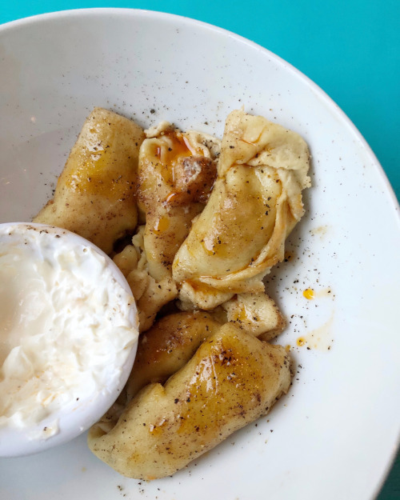
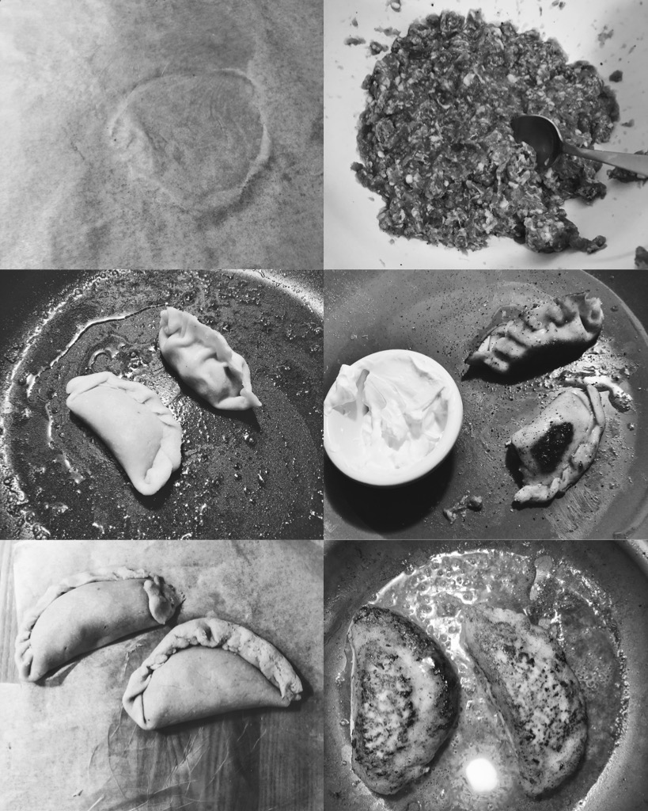

Keto Dumplings

Bellingham is where we we both went to college. While we attended
Western Washington University (WWU) at different times, there was one
constant… Late night dumplings. Yes, Palminis was the spot to be after
a few beers and bacon at soul night. As you walked in the steamy hole
in the wall, the smell of Russian dumplings brought you back to home,
that is until someone in line yelled at you to shut the door.
These KETO Dumplings are without a doubt a great substitute for anyone
who is missing that warm, juicy snack before bed. I brought together a
few different recipes to create this dish. This was also the first
time I tried out the
Crazy Dough from Gnom-Gnom.
I found it a snap to bring together and the outcome is awesome! It
took about 30 minutes to bring this dish together, and had some major
wife approval.

Ingredients
| Dough |
| Amount |
Ingredient |
| Almond Flour |
96g |
| Coconut Flour |
24g |
| Xnathum Gum |
2 tsp |
| Baking Powder |
1 tsp |
| Kosher Salt |
1/4 tsp |
| Filling |
| Amount |
Ingredient |
| Ground Beef |
4oz |
| Ground Pork |
4oz |
| Onion |
1 large |
| Garlic |
4 cloves |
| Kosher Salt / Pepper |
1 tsp (or to taste) |
Directions
The Dough
-
Bring together the dry ingredients into a food processor. Pulse
until combined.
-
Add the egg, vinegar continue to pulse.
-
The dough will start to come together. If it seems too dry, slowly
add water until the consistency of the dough can come together.
-
Take out the dough and wrap it up in plastic wrap.
-
Kneed the dough for a few minutes, it should really feel like
pizza dough at the point.
-
Put in fridge for at least 15 minutes.
The Filling
-
Into a bowl, combine equal parts ground beef and pork. I used
about 4oz each.
-
Finely great a large onion into the bowl.
-
Respect all the granny's that grated onions.
-
Add salt, pepper, and cayenne.
The Cook
-
Measure out about 10g of dough per dumpling.
-
Roll into ball and place between parchment paper. Roll out the
dough into circles about 4 inches in diameter. This is a labor of
love grab someone to help you.
-
Place about a teaspoon of filling into the dough. Be sure not to
add too much or you will not be able to crimp the ends.
-
Crimp the ends together. I started off making them look awesome,
but quickly found that simply closing them up led to us eating
dumplings quicker. If you want to check out someone who is great
at crimping dumplings
check out this video.
-
Once you have about 8 dumplings prepared, place them into a heated
(med-high) buttered 12 in pan. Fry on all sides until golden.
-
Put about 4 tbs of water into the pan, cover, and lower the heat
to medium.
-
Steam the dumplings for about 8 minutes, listen for the water. If
you hear the dumplings start making more noise, add a little more
water.
-
Remove lid and ensure all the water is boiled off. This is where I
added more butter to crisp up the outside.
-
Once the dumplings are crispy, remove and serve with sour cream,
hot sauce, and vinegar.